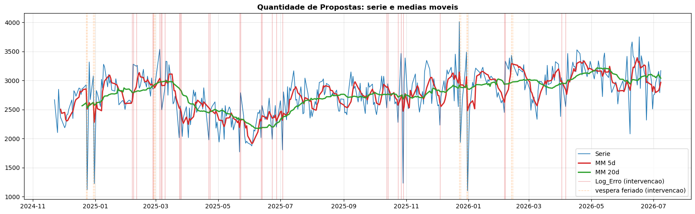
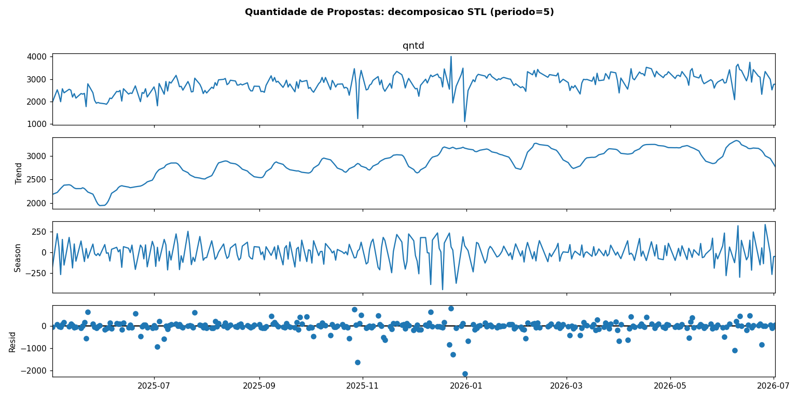
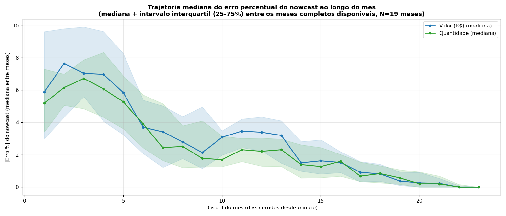

Modelagem SARIMA/SARIMAX das séries diárias de Valor e Quantidade de Propostas
Econometria e Análise de Intervenção
Séries temporais clássicas, análise de intervenção (Box–Tiao) e teste de cointegração
aplicados em pé de igualdade às séries diárias de valor (R$) e quantidade de
propostas (etapa 16).
Daniel Ramazzotte · Julho/2026
Agenda
Introdução — motivação, dados e construção da base
Bloco 1 — Cointegração (valor × quantidade têm equilíbrio de longo prazo?) → método + resultado
Bloco 2 — Análise de intervenção (Box–Tiao) → método + resultado
Bloco 3 — Estimação e Validação (SARIMA/SARIMAX, walk-forward, ranking) → método + resultado
Bloco 4 — Modelos mensais → método + resultado
Fechamento — Interpretação · Conclusão · Discussão
Introdução
Motivação, dados e construção da base
Por que prever vendas diárias? (necessidade de negócio)
A área de crédito precisa saber, todo dia útil, o que esperar do dia seguinte em duas
frentes operacionais distintas:
- Quantidade — quantas propostas chegarão para análise hoje? Dimensiona a equipe/fila
de análise (capacidade de atendimento, alocação de analistas). - Valor (R$) — quanto será processado em propostas hoje? Dimensiona capital, caixa e
risco (quanto a operação precisa ter disponível).
Essas duas perguntas já são respondidas hoje em produção, por um sistema automatizado que
vamos chamar, ao longo desta apresentação, de "Pipeline em Produção" (ou "Pipeline Antiga
em Produção" quando comparado aos modelos novos deste estudo) — é a referência que qualquer
modelo novo precisa igualar ou superar para ser adotado.
O modelo atual, em uma frase: um pipeline de AutoML (TPOT) — busca automatizada
entre milhares de combinações de features/algoritmos de ML, retreinado quase
diariamente para se manter competitivo. Potente, mas caixa-preta: não dá para ler,
a partir dele, "quanto a fila pesa" ou "quanto um erro operacional custa" na previsão.
Motivação
- Pergunta do estudo: um modelo econométrico clássico (SARIMA/SARIMAX), com
estrutura interpretável e uma única especificação fixa (não retreinada a cada dia),
consegue igualar ou superar a Pipeline em Produção nas duas séries que ela já prevê? - Se sim, o que se ganha: coeficientes com significância estatística (o que empurra a
série pra cima/baixo, e por quanto), tratamento transparente dos dias atípicos
(intervenção de Box–Tiao em vez de simplesmente descartá-los) e um modelo auditável. - Escopo: valor e quantidade tratados em pé de igualdade — as duas passam pelo
mesmo pipeline metodológico (cointegração → intervenção → walk-forward → ranking).
Se o modelo branco vencer ou empatar: ganha-se interpretabilidade sem abrir mão de
acurácia. Se perder: ao menos serve como benchmark diagnóstico do que move a série.
Construção da base
Agregação diária das propostas da etapa 16, apenas em dias úteis (exclui sábados,
domingos e feriados nacionais via workadays) → sazonalidade semanal regular m = 5.
| Valor (R$) | Quantidade | |
|---|---|---|
| Definição | valor monetário processado no dia | nº de propostas analisadas no dia |
| Fonte | crefaz.ft_proposta (etapa 16) |
crefaz.ft_proposta (etapa 16) |
| Papel | série-alvo | série-alvo |
- As duas séries têm o mesmo status: cada uma recebe seleção de ordem, intervenção,
ranking e modelo recomendado próprios. - Histórico: ~410 dias úteis (07/11/2024 → 01/07/2026).
- Janela de avaliação walk-forward: N = 209 (valor) e N = 211 (quantidade).
As duas séries lado a lado


Séries com médias móveis de 5 e 20 dias; linhas verticais = dias de intervenção. Ambas
mostram nível que passeia (não-estacionário), sazonalidade semanal e quedas
pontuais nos dias de erro operacional.
Análise clássica — estacionariedade e ACF/PACF
Antes de estimar: estacionariedade (ADF/KPSS), autocorrelação (ACF/PACF) e
decomposição (STL, período 5) — feitas para as duas séries.

- ACF em nível decai lentamente (valor e qtd) → não-estacionária → justifica
d = 1. - Na 1ª diferença, pico negativo no lag 1 → assinatura de MA(1) em ambas.
Decomposição STL (período = 5)
Tendência suave de médio prazo + sazonalidade semanal clara + resíduo com spikes nos
dias atípicos (que a intervenção trata). Padrão idêntico nas duas séries (quantidade tem
histórico mais curto: dado começa em mai/2025, vs nov/2024 do valor).


Bloco 1 — Cointegração
Valor e quantidade têm equilíbrio de longo prazo?
Cointegração — o método
Cointegração testa-se nos níveis, não nas diferenças. O pré-requisito é que ambas as
séries sejam I(1) (não-estacionárias em nível, estacionárias na 1ª diferença).
- Pergunta econômica: se valor e quantidade forem cointegrados com vetor
(1, −β), o
ticket médio (valor / qtd) seria estacionário → proporcionalidade estável no longo prazo. - Testes aplicados: Engle–Granger e Johansen (traço) sobre os níveis; seleção do lag do VAR
por critério de informação antes do Johansen (sensível ao lag); ADF do ticket médio; ADF com
tendência (ct) para descartar trend-stationarity. - Ajuste de intervenção (pré-teste): antes de qualquer teste, remove-se dos níveis o efeito
de pulso dos dias atípicos (Log_Erro+ véspera Natal/Ano Novo/Carnaval) — outlier aditivo
via regressão em[const, dummy_atípico], subtraindo o coeficiente do dummy (preserva
nível/tendência, só tira o choque pontual). Necessário porque o Johansen desta versão do
statsmodelsnão aceita exógena — sem isso, os choques pontuais (fora do equilíbrio de longo
prazo) inflam ou mascaram Engle–Granger e Johansen.
Por que importa: decide se as duas séries devem ser modeladas juntas (VECM/ARDL)
ou separadamente. É o teste que legitima tratar valor e quantidade como problemas
independentes.
Resultado — Cointegração (não há cointegração confiável)
Ajuste prévio: 37 dias atípicos (Log_Erro + véspera Natal/Ano Novo/Carnaval) tiveram o
efeito de pulso removido dos níveis antes dos testes (outlier aditivo, coeficiente único
para os 37 dias — nível/tendência preservados).
| Teste | Valor | Quantidade | Leitura |
|---|---|---|---|
| ADF nível | p = 0,060 | p = 0,0005 | valor I(1) · qtd I(0) — ordens mistas |
| ADF 1ª diferença | p = 0,000 | p = 0,000 | ambas estacionárias diferenciadas |
ADF-ct (com tendência) |
p = 0,0004 | p = 0,0003 | ambas trend-stationary |
| Engle–Granger (estat = −0,60) | p = 0,956 | NÃO rejeita → sem cointegração | |
| ADF do ticket médio | p = 0,790 | erro de equilíbrio não-estacionário |
Relação de longo prazo estimada: valor = −1.536.713 + 2.220,46 · qtd (β ≈ ticket médio).
- Seleção de lag do VAR: AIC → 12, BIC → 4 (usa-se
k_ar_diff = 11no Johansen); teste de
whiteness dos resíduos não pôde ser calculado (nlags insuficiente para 12 lags no modelo). - Johansen (sem tendência): traço 13,83 (r≤0, crit5%=15,49) e 0,38 (r≤1, crit5%=3,84) →
0 relações. Com tendência determinística: traço 27,49 e 8,53 (crit5%=18,40/3,84) →
2 relações, mas coincide com a trend-stationarity do ADF-ct— não cointegração genuína.
Conclusão: o erro de equilíbrio deriva (não volta à média) → modelar as séries
separadamente. Como as ordens ficam mistas I(0)/I(1), o follow-up correto é o teste de
limites ARDL (Pesaran–Shin–Smith), não VECM.
Resultado — Cointegração: gráficos

Painel superior: valor e quantidade em z-score, com os dias atípicos ajustados marcados em
vermelho. Painel inferior: resíduo de Engle-Granger (valor − relação de longo prazo) —
deriva ao longo do tempo em vez de oscilar em torno de zero, evidência visual da ausência
de cointegração.
Bloco 2 — Análise de intervenção
Como os dias atípicos (erro operacional e feriados) são tratados
Intervenção — o método (Box–Tiao)
Para cada dia especial (eventos do Log_Erro operacional + vésperas de feriado) ajustamos
o SARIMA/SARIMAX com regressores de intervenção e testamos até 3 formas de efeito
(temporário — nenhuma delas é uma mudança de nível permanente):
- Abrupto: efeito constante durante os dias de impacto, some abruptamente depois.
Única forma testável em eventos de 1 dia. - Gradual: efeito máximo no 1º dia, decaindo linearmente até o fim da janela.
Só testado para janelas com mais de 1 dia. - Rebote (bifásico): 1º dia com efeito de sinal oposto ao(s) dia(s) seguinte(s)
(ex.: erro derruba no dia 1, backlog processado no dia 2 empurra acima da média). Só
testado paraLog_Errocom janela contígua ≥ 2 dias.
Escolha por evento: ajustam-se as formas aplicáveis e fica-se com a de coeficiente(s)
significativo(s) (p < 0,05) e menor AIC; empate → abrupto. Aqui a série mantém
os dias especiais — é necessário para estimar o efeito.
Papel no ranking: a intervenção descontamina o ajuste — os coeficientes AR/MA são
estimados sem serem puxados pelos spikes. Nos dias avaliados (normais) as dummies valem 0.
Intervenção — funções de transferência
Abrupto (efeito constante, retorno abrupto a 0):
$$\text{efeito}(t) = \omega_0 \cdot I(t), \qquad I(t) = \begin{cases} 1 & \text{dias de impacto} \\ 0 & \text{fora} \end{cases}$$
Gradual (decaimento linear ao longo da janela de impacto, posição 0-indexada):
$$w(k) = \frac{n-k}{n}, \qquad k=0 \Rightarrow w=1, \qquad k=n-1 \Rightarrow w=\frac{1}{n}$$
Rebote / bifásico (2 regressores livres, coeficientes independentes):
$$\text{efeito}(t) = \beta_1 \cdot \text{rebote\_dia1}(t) + \beta_2 \cdot \text{rebote\_pos}(t)$$
Só aceito como classe se β₁ e β₂ forem significativos E de sinais opostos
($\text{sign}(\beta_1) \neq \text{sign}(\beta_2)$) — captura o padrão "queda no dia 1,
recuperação acima da média depois".
Log_Erro — registro completo (logs/Log_Erro.xlsx)
Base de incidentes operacionais que alimenta a análise de intervenção (17 eventos; a véspera
de Natal/Ano Novo/Carnaval entra à parte, via calendário):
| Data | Sistema em erro | Impacto (dias úteis) |
|---|---|---|
| 06/02/2025 | BrSCAM | 3 |
| 26/02/2025 | CrefazOn | 2 |
| 05/03/2025 | Carnaval | 2 |
| 07/03/2025 | Bacen - Fila Pagamento | 2 |
| 24/03/2025 | Enel - Mega | 3 |
| 22/04/2025 | CrefazOn | 2 |
| 22/05/2025 | Kamunda - Enel | 2 |
| 12/06/2025 | Unico - CrefazOn | 2 |
| 23/06/2025 | Code-Mega | 1 |
| 27/06/2025 | CrefazOn | 1 |
| 03/07/2025 | CrefazOn - Cobrança | 1 |
| 13/10/2025 | CrefazOn | 2 |
| 24/10/2025 | E-Consulter | 2 |
| 29/10/2025 | Microsoft | 1 |
| 04/12/2025 | Crivo | 1 |
| 05/02/2026 | RBM | 2 |
| 02/04/2026 | RBM | 2 |
Impacto/dias define a janela de dias úteis afetados a partir da Data — é o n usado nas
fórmulas de gradual/rebote da forma anterior.
Resultado — Intervenção: efeito por evento
18 eventos classificados em cada série (abrupto × gradual × rebote). Predominam efeitos
negativos (paradas/erros derrubam a série); Carnaval aparece como positivo
(acúmulo pós-feriado).
| Evento (exemplos) | Efeito no Valor | Efeito na Quantidade |
|---|---|---|
| Véspera Natal/Ano-Novo/Carnaval | −R$ 2,00 mi (abrupto) | −922 (abrupto) |
| Microsoft (29/10/2025) | −R$ 2,82 mi (abrupto) | −1.413 (abrupto) |
| CrefazOn-Cobrança (03/07/2025) | −R$ 1,28 mi (abrupto) | −705 (abrupto) |
| Carnaval (05/03/2025) | +R$ 1,77 mi (gradual) | +763 (abrupto) |
| Kamunda-Enel (22/05/2025) | queda dia 1 + recuperação dia 2 (rebote) | — |
Classificação: Valor → maioria gradual/abrupto, com a forma rebote também presente
(ex.: Kamunda-Enel) · Quantidade → maioria abrupto/não signif. Contagem exata por forma a
ser confirmada na próxima reexecução do notebook (ver Discussão).

Resultado — a intervenção limpa o ajuste (pré × pós)
Comparando o SARIMA sem e com as dummies de intervenção (N = 410):
| Série | AIC | DP resíduo | MAE resíduo | Ljung-Box p(10) | |
|---|---|---|---|---|---|
| Valor | pré | 11.831,6 | R$ 620,0 k | R$ 434,2 k | 0,02 ❌ |
| pós | 11.745,9 | R$ 550,5 k | R$ 395,3 k | 0,40 ✅ | |
| Quantidade | pré | 5.742,2 | 359,1 | 246,4 | 0,01 ❌ |
| pós | 5.654,3 | 326,9 | 230,7 | 0,38 ✅ |
- AIC e desvio do resíduo caem nas duas séries.
- Ljung-Box deixa de rejeitar (p sobe de ~0,01 para ~0,4): a autocorrelação residual que os
spikes causavam desaparece → dinâmica de curto prazo bem capturada.
Bloco 3 — Estimação e Validação
SARIMA/SARIMAX, walk-forward e ranking
Método experimental — walk-forward × ajuste normal
Replica a operação real: retreina todo dia, prevê o próximo. Aplicado igualmente às duas séries.
| Walk-forward | Normal (1 ajuste) | |
|---|---|---|
| Nº de ajustes | N (um por dia) | 1 |
| Usa dados futuros p/ estimar? | Não (sem vazamento) | in-sample: sim |
| O que mede | Erro out-of-sample realista | qualidade de ajuste |
| Onde no estudo | ranking | diagnóstico |
- Dias atípicos (
Log_Erro+ vésperas) saem dodatas_eval: o ranking pontua só dias normais. - Comparação maçã-com-maçã com a Pipeline Antiga (backup), também previsão diária de 1 passo.
- Respeita a ordem temporal: a cada dia da janela de avaliação, o treino usa só dados
anteriores (y_tr = serie.iloc[:loc]), prevê 1 passo à frente e anda um dia — nunca vê
o futuro.
Vazamento leve — e só na especificação, não na estimação: a ordem
(p,d,q)(P,D,Q)é
escolhida uma única vez viaauto_arimasobre a série inteira, antes do
walk-forward — viés otimista pequeno, porque essa escolha "viu" dados que, em cada dia do
walk-forward, ainda estariam no futuro. Os coeficientes, porém, são reestimados
honestamente a cada dia, só com o passado — a estimação em si (MLE via filtro de Kalman,
em cada refit) não vaza. Tolerável porque a ordem é um objeto de baixa dimensão e estável (raramente muda
entre 80% e 100% da série); rigor total exigiria congelar a ordem na janela inicial de
treino ou reselecioná-la a cada dia (caro).
Métricas de comparação
O ranking é ordenado por RMSPE (penaliza erros grandes); as demais métricas dão o retrato completo.
| Métrica | O que mede |
|---|---|
| MAPE médio % | erro percentual absoluto médio (dia típico) |
| RMSPE % | raiz do erro quadrático percentual — chave do ranking (pune outliers) |
| R² | fração da variância explicada |
| Viés (MPE) | erro médio com sinal → super/subestimação sistemática |
| DP Erro | desvio-padrão do erro — dispersão/consistência da previsão, independente do viés |
| Mediana % | robusta a caudas |
| % < 5% / < 10% | acurácia operacional (dias dentro da meta) |
Meta de qualidade: MAPE ≤ 5% (ideal) · ≤ 10% (aceitável), idêntica para valor e quantidade.
Covariáveis
A exógena é sempre de D-1 (conhecida no momento da previsão → sem vazamento).
| Papel | Valor | Quantidade |
|---|---|---|
Endógena y_t |
valor diário (R$) | quantidade diária |
| Exógena D-1 (só SARIMAX) | fila_d1 — fila de pagamento de ontem (etapa 15) + dow (ter…sex) |
valor_d1 — valor de ontem + dow (ter…sex) |
| Intervenção (SARIMA + SARIMAX + Log-retorno) | abrupto/gradual/rebote dos dias especiais | idem |
- Dummies de dia-da-semana vêm empacotadas na MESMA exógena D-1 (só entram no SARIMAX)
e capturam o padrão semanal pelo dia real, robusto à ausência de feriados na grade (que
desalinharia o lagt-5). - SARIMA puro permanece univariado por design (
exog=None) → o ranking mostra
diretamente se a exógena ajuda (SARIMA sem × SARIMAX com). Spoiler: ajuda no valor,
não na quantidade. A intervenção, porém, entra nos 3 modelos — não é exclusiva do
SARIMAX.
Modelos de séries temporais testados
Três famílias candidatas, todas recebem os regressores de intervenção (Box–Tiao) e são
avaliadas no mesmo walk-forward — a diferença entre elas é só a estrutura do modelo:
| Modelo | Endógena | Exógena D-1 (além da intervenção) | Intervenção | Ideia central |
|---|---|---|---|---|
| SARIMA | nível (y_t) |
nenhuma (univariado) | ✅ | AR/MA + sazonalidade semanal (m=5) |
| SARIMAX | nível (y_t) |
fila_d1 / valor_d1 |
✅ | SARIMA + regressor exógeno defasado |
| Log-retorno | log(y_t) − log(y_{t-1}) |
nenhuma | ✅ | modela a variação percentual diária, não o nível; a previsão é revertida (exp) de volta pro nível ao final |
- A intervenção (dummies abrupto/gradual/rebote) entra nos 3 modelos, não só no SARIMAX —
é o que descontamina o ajuste dos spikes em qualquer um deles. - Só o SARIMAX recebe a covariável de negócio (
fila_d1/valor_d1) — é essa a única
diferença estrutural entre SARIMA e SARIMAX no ranking.
Por que Log-retorno entra na disputa: séries em nível têm variância que cresce com a
escala; o log-retorno estabiliza a variância e é a parametrização clássica para retornos
financeiros — vale testar se essa transformação ajuda aqui também.
Resultado — Estimação (coeficientes verificados)
Ajuste in-sample no histórico completo (N = 410), exógena padronizada (z-score):
| Coeficiente | Valor SARIMAX(0,1,1)(0,0,1,5) |
Quantidade SARIMAX(0,1,1)(0,0,2,5) |
|---|---|---|
| Exógena D-1 | fila_d1 +96,8 mil / dp · p < 0,001 ✅ |
valor_d1 −14,4 · p = 0,61 ❌ |
ma.L1 (choque de ontem) |
−0,784 · p < 0,001 | −0,794 · p < 0,001 |
ma.S.L5 (semanal) |
−0,111 · p = 0,019 | −0,128 · p = 0,009 |
ma.S.L10 |
— | −0,087 · p = 0,131 |
| AIC (com exógena) | 11.827,5 | 5.744,6 |
O achado central, com significância estatística: a fila do dia anterior é driver
forte e positivo do valor (p < 0,001), mas o valor de ontem NÃO ajuda a prever a
quantidade (p = 0,61). É exatamente por isso que o vencedor de cada série é diferente.
Resultado — Ranking Valor (N = 209, por RMSPE)
| Modelo | MAPE % | RMSPE % | R² | Viés (R$) | Mediana % |
|---|---|---|---|---|---|
| SARIMAX | 7,32 | 9,21 | 0,753 | +9.651 | 6,02 |
| SARIMA (univariado) | 7,56 | 9,55 | 0,748 | −27.479 | 6,42 |
| Pipeline Antiga em Produção | 7,23 | 9,57 | 0,745 | +28.438 | 5,35 |
| Log-retorno | 8,27 | 10,97 | 0,610 | +113.506 | 6,72 |
- SARIMAX tem o melhor RMSPE e o melhor R² de todos os candidatos.
- Fica ~0,1 p.p. atrás da Antiga só no MAPE médio — mas a Antiga é retreinada quase
diariamente; o SARIMAX usa uma única especificação. A exógenafila_d1agregou.
Resultado — Ranking Quantidade (N = 211, por RMSPE)
| Modelo | MAPE % | RMSPE % | R² | Viés | Mediana % |
|---|---|---|---|---|---|
| SARIMA (univariado) | 7,20 | 9,08 | 0,414 | +15,6 | 6,44 |
| SARIMAX | 7,31 | 9,79 | 0,319 | +1,0 | 5,52 |
| Pipeline Antiga em Produção | 7,89 | 9,88 | 0,313 | +40,5 | 6,42 |
| Log-retorno | 8,10 | 10,86 | 0,089 | +97,8 | 6,90 |
Contraste decisivo: para a quantidade, o SARIMA univariado vence — a exógena
valor_d1piora o RMSPE. O padrão semanalm = 5já basta. Confirma o valor de deixar
SARIMA e SARIMAX lado a lado no ranking.
Resultado — Modelos escolhidos × Pipeline (capacidade preditiva)
Da função comparar_modelo (histórico completo), o modelo recomendado de cada série bate a
Pipeline Antiga onde importa:
| Vencedor | Antiga | Vencedor | Antiga | ||
|---|---|---|---|---|---|
| Valor — SARIMAX | Qtd — SARIMA | ||||
| RMSPE % | 9,21 | 9,57 | 9,08 | 9,88 | |
| R² | 0,753 | 0,745 | 0,414 | 0,313 | |
| Dias < 10% | 153/209 | 154/209 | 163/211 | 152/211 | |
| Erro máx. % | 30,6 | 39,5 | 30,5 | 34,1 |
Recorte recente (janeiro em diante): a vantagem cresce — Valor SARIMAX 8,66% vs Antiga
10,22% de RMSPE; Qtd SARIMA 8,67% vs 9,35%. Os modelos brancos são mais estáveis no período recente.
Adequação e predição — diagnóstico dos resíduos

- Autocorrelação: correlograma dentro das bandas; Ljung-Box não rejeita → curto prazo
bem modelado (vale para as duas séries). - Ressalvas (idem qtd): heterocedasticidade e caudas pesadas/assimetria (Jarque-Bera
significativo) — erros maiores nos dias atípicos. Justifica a intervenção como tratamento.
Valor — previsto × realizado (SARIMAX)

O SARIMAX acompanha bem nível e sazonalidade; os maiores erros concentram-se nos saltos
pós-atípicos (onde a Antiga também erra). A curva da quantidade (SARIMA) tem comportamento
análogo.
Bloco 4 — Modelos mensais
O total do mês, além do diário
Modelos mensais — o método
Além do diário, acompanhamos o total do mês de cada série via Nowcast: realizado
acumulado no mês + previsão SARIMAX dos dias úteis restantes → atualiza a estimativa do total
dia a dia. As exógenas D-1 não entram na previsão dos dias restantes (não são conhecidas no
horizonte); a ordem sazonal (m=5) já captura o padrão semanal.
Objetivo: acompanhar o total do mês em tempo real e caracterizar a velocidade de
convergência do erro conforme o mês avança — quantos dias úteis são necessários até o
nowcast ficar confiável.
Resultado — Nowcast
O nowcast converge para o realizado conforme o mês avança (mais dias viram realizado,
menos ficam a cargo da previsão):

Resultado — velocidade de convergência do erro
Trajetória mediana do |Erro %| do nowcast por dia útil do mês, agregando os 19 meses
completos disponíveis (faixa = intervalo interquartil 25–75% entre os meses):

Achado: o erro típico começa em ~5–7% nos primeiros dias do mês e cai para < 2% a
partir de ~2/3 do mês corrido — o nowcast já é uma referência confiável bem antes do
fechamento do mês, com trajetórias muito parecidas entre valor e quantidade.
Interpretação, Conclusão e Discussão
Fechamento do estudo
Interpretação
O que os modelos revelam, com significância estatística:
- Valor é puxado pela fila.
fila_d1é driver positivo e forte (+R$ 96,8 mil por
desvio-padrão de fila, p < 0,001): a fila de pagamento de ontem antecipa o valor de hoje. - Quantidade é autossuficiente. O valor de ontem não informa a quantidade de hoje
(p = 0,61); o que a governa é a estrutura própria (MA(1) + sazonalidade semanal). - Dias de erro operacional têm efeito real e mensurável (véspera −R$ 2,0 mi / −922
propostas; Microsoft −R$ 2,8 mi / −1.413) → merecem intervenção, não descarte cego. - Ambas as dinâmicas diárias são bem descritas por suavização MA(1) (−0,78/−0,79) com
leve componente semanal. - Valor e quantidade NÃO compartilham equilíbrio de longo prazo → modelagem separada é a
escolha correta (ticket médio não-estacionário).
Conclusão
Valor → SARIMAX
(0,1,1)(0,0,1,5)+fila_d1+ intervenção.
Melhor RMSPE (9,21%) e R² (0,753) do estudo; MAPE praticamente empatado com a
Pipeline Antiga, com a vantagem decisiva de ser interpretável.Quantidade → SARIMA univariado
(0,1,1)(0,0,2,5)+ intervenção.
A exógena não ajuda; o modelo univariado com sazonalidade semanal é o melhor e o mais
parcimonioso (MAPE 7,20%, RMSPE 9,08%, R² 0,414) — e supera a Antiga em todas as métricas.
- Modelos brancos competitivos com o melhor ML e superiores no RMSPE nas duas séries.
- A análise de intervenção melhora o ajuste (AIC↓, Ljung-Box deixa de rejeitar) em ambas.
- Sem cointegração valor × qtd → séries modeladas separadamente.
- Resposta à motivação inicial: sim — um modelo branco, com especificação única, iguala
ou supera a pipeline em produção nas duas séries, sem abrir mão de interpretabilidade.
Discussão — limitações e próximos passos
Limitações
- Ajuste de intervenção da cointegração usava 1 único dummy pooled (mesmo coeficiente para
os 37 dias atípicos, sem distinguir Natal/Ano Novo/Carnaval) e só marcava o dia exato da
véspera — dias de recesso adjacentes (26, 29, 30/dez) ficavam de fora, deixando alguns dias
"não corrigidos" no gráfico de níveis padronizados (ex.: 31/dez/2025, z ≈ −4). Já corrigido
no código: dummy próprio por tipo de véspera + dummy obrigatório para o dia útil anterior
(rush pré-feriado); pendente apenas reexecutar o notebook para atualizar números/figuras.
- Heterocedasticidade e caudas pesadas nos resíduos das duas séries (mitigadas por
intervenção, mas presentes) → intervalos de confiança otimistas nos extremos.
- Classificação da forma da intervenção (abrupto × gradual) tem pequeno look-ahead
estrutural: é feita uma vez na série inteira (a maior parte é calendário, conhecido de
antemão); os coeficientes, porém, são reestimados a cada dia no walk-forward.
- O nowcast do total mensal converge rápido (erro típico < 2% já em ~2/3 do mês corrido),
mas ainda não foi comparado contra baselines simples (ex.: persistência do mês anterior) —
fica como próximo passo antes de recomendar substituição de qualquer acompanhamento existente.
Próximos passos
- ARDL bounds test como follow-up formal da cointegração (ordens mistas I(0)/I(1)).
- Injetar intervenções (Carnaval/vésperas) como exógena futura determinística no nowcast.
- Avaliar reclassificação da intervenção dentro do walk-forward (rigor total).
Referências
- Notebook do experimento: [[experimento_sarimax]]
- Justificativa detalhada:
docs/justificativa_sarimax_valor.md - Scripts de produção:
scripts/producao/projecoes_valor.py,projecoes_qtd.py - Backups de previsão:
resultados/backup_valor.xlsx,backup_qtd.xlsx